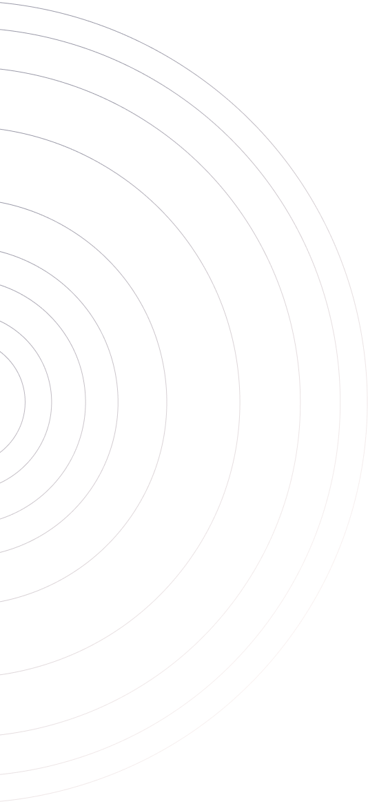
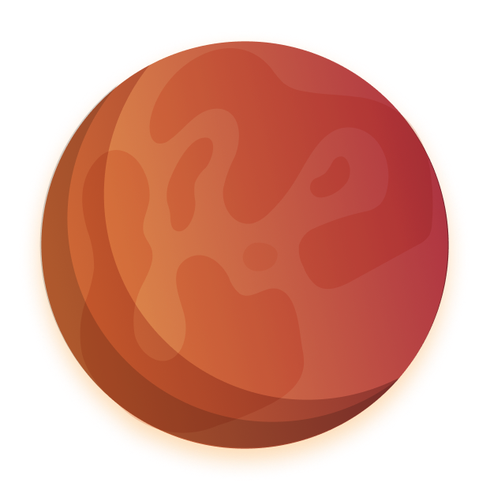
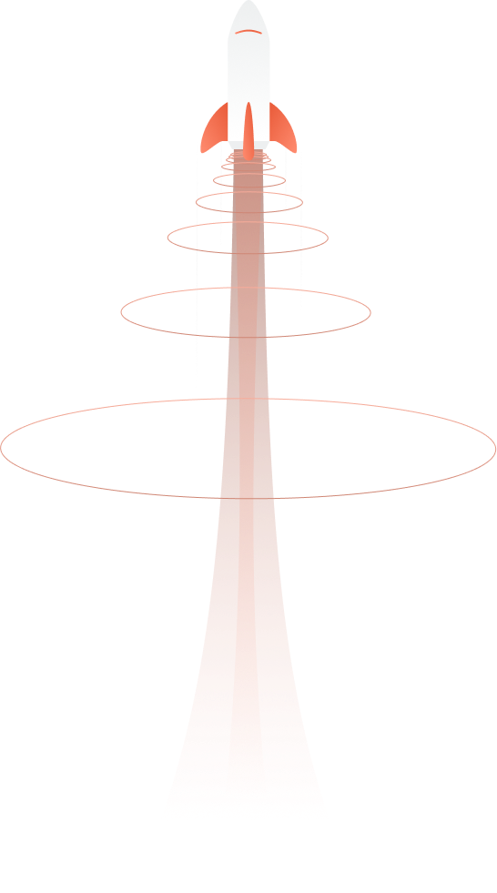

O caminho para
Por Que Marte?
Sobre o planeta vermelho
A uma distância média de 140 milhões de milhas, Marte é um dos vizinhos habitáveis mais próximos da Terra. Marte está mais ou menos a metade da distância da Terra do Sol, então ainda tem luz solar decente. Está um pouco frio, mas podemos esquentar. Sua atmosfera é composta principalmente de CO2 com um pouco de nitrogênio e argônio e alguns outros oligoelementos, o que significa que podemos cultivar plantas em Marte apenas comprimindo a atmosfera.
A gravidade em Marte é cerca de 38% da da Terra, então você seria capaz de levantar coisas pesadas e dar voltas. Além disso, o dia está notavelmente próximo ao da Terra.
O caminho para
tornar a humanidade
multiplanetária
Inscreva-se agora
